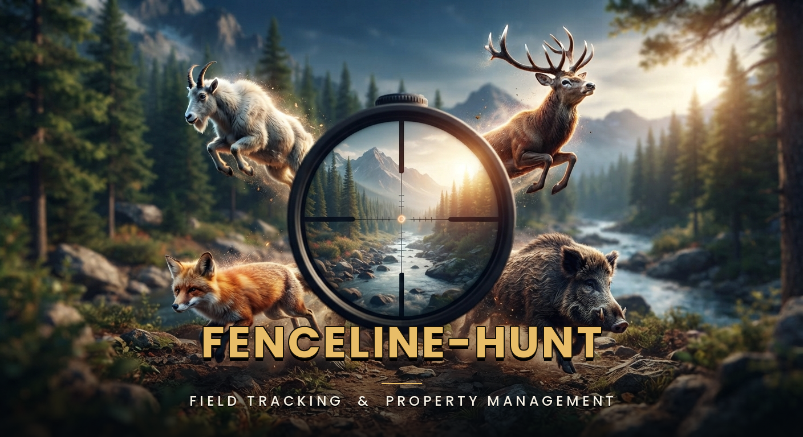

Offline fenceline mapping for Android
Map fencelines, record drive and walk trips, log culls and navigate private and public land — with no signal.
Download the latest APK Free to try (3 trips) · Android 8.0+ · around 5 MB
Updates install over the top and keep every saved map, fenceline, trip and cull log.
Fenceline-Hunt User Guide (PDF) — recording trips, drawing and recording fencelines, logging culls, offline basemaps, and every setting explained. This link always serves the guide for the newest release.
The app checks this release channel itself: open Menu → Settings → Software Update → Check for Updates, or tap the update banner when it appears.
Free to try: 3 trips — each trip you start uses one of the three, however short it is; discard it and the use comes back. After that, recording trips, capturing offline basemaps and exporting data are locked until the app is activated.
A licence is $29.95, one-off. The key does not expire. To buy it, email fenceline.hunt@gmail.com — card, PayPal or bank transfer — and the key comes back by email. You can also use Menu → Settings → License → "How to buy a key" inside the app.
A key is issued to a specific email address and is verified entirely offline — you only need a connection the first time a key is validated.